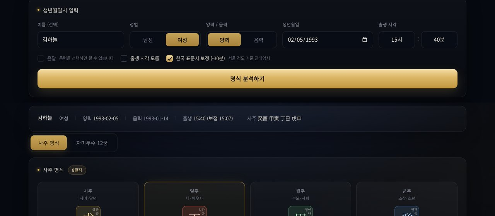

라이트 · 30P
19,900원
2026~2027 흐름을 가볍게 짚는 입문 리포트
- 사주 원국·십성 기본 해설
- 2027 세운 총평과 월별 흐름
- 올해의 재물·관계 포인트
창간 2026.11.11
발행인 · 정운(正運)
JUNGWOON TIMES · 사주 명리 미디어
운명을 읽는 사람들의 신문 — 여덟 글자로 오늘을 해석합니다
2026.11.21 (토)
통권 제2호 · 주간
창간 특집 2027 정미년 총운
정화(丁火)가 미토(未土) 위에 앉은 해. 같은 정미년이라도 누구에게는 문이 열리고 누구에게는 문이 닫힌다. 기준은 띠가 아니라 내 사주의 온도다.
제2면
생년월일 또는 띠를 넣으면, 오늘 자 간지와 내 기운을 맞춰 한 줄 사주신문 헤드라인을 뽑아 드립니다.
아직 오늘의 지면이 비어 있습니다
왼쪽에 생년월일을 넣고 오늘의 1면 뽑기를 눌러 보세요.
오늘 자 간지와 내 기운이 만나는 지점을 한 줄로 써 드립니다.
더 깊은 풀이는 정밀 리포트(30P·60P·100P)에서 이어집니다. 오늘의 운세는 하루 단위, 리포트는 대운·세운까지 10년 단위로 봅니다.
제3면
총운·띠별·일주별·재물·인연·직장·건강·시기별 — 여덟 개 지면으로 읽는 사주 명리. 제목을 누르면 기사 전문이 펼쳐집니다.
제4면 · 정운의 분석실만세력 · 자미두수
정운타임즈가 쓰는 계산 엔진을 그대로 담은 사주분석 웹 프로그램입니다. 생년월일 하나로 사주 여덟 글자와 자미두수 12궁을 그리고, 대운·세운의 흐름까지 한 화면에서 봅니다.
체험판은 잠금 없는 무료판입니다. 정식 판은 63P 해설 전자책과 이용권 코드가 함께 제공됩니다.

제5면
신문이 하루를 읽는다면, 리포트는 10년을 읽습니다. 신청 후 입력하신 이메일로 PDF가 도착합니다.
라이트 · 30P
19,900원
2026~2027 흐름을 가볍게 짚는 입문 리포트
정운 추천
스탠다드 · 60P
29,900원
대운·세운을 함께 보는 종합 리포트
프리미엄 · 100P
49,900원
평생 쓸 한 권, 100P 통합 리포트
결제와 신청은 운명사주 아우라 결제 페이지에서 이루어집니다. 결제가 어려우면 카카오 1:1 상담으로 안내해 드립니다.
제6면
한 주의 간지와 띠별 속보, 그 주에 조심할 시기와 개운 포인트를 한 장으로 정리한 주간 사주신문입니다. 광고 없이, 지면 내용만 보냅니다.